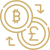

Wenn du nach einem Konzept suchst, welches auf realen Projekten und einem stabilen Fundament aufgebaut ist, dann schau dir jetzt unsere kostenlose ZENIQ Präsentation an:
Zur Zeniq PräsentationSafir global präsentiert:
Der Kryptocoin mit einem realen Fundament
Wir verschenken für jeden treuen Benutzer von Nomo ZENIQ Prämien von bis zu 10.000 ZENIQ-Coins und 25.000 TUPAN-Token von den treuen Benutzern des Nomo ZENIQ-Prämienprogramms.
HIER 10000 ZENIQ EINFORDERN

Ein kurzer Überblick von ZENIQ
Du möchtest von den Zukunftstechnologien Krypto, Blockchain und Tokenisierung profitieren, aber es ist
einfach zu kompliziert?
Du kaufst regelmäßig Kryptocoins, aber bist schockiert von den teilweise hohen Transaktionskosten der
Exchanges?
Du hast Kryptos, doch kannst du sie wirklich im Alltag nutzen?
Du suchst einen nachhaltigen Weg mit der Kryptowelt dein Vermögen aufzubauen?
Wir liefern direkte Lösungen

Nachhaltige Profite durch den zukünftigen Billionen-Markt Tokenisierung
Vermögensaufbau mit täglicher Coin-Vermehrung durch innovativste Technologie von deinem Wohnzimmer aus
Ein REALES Geschäftsmodell auf dem du ein REALES Business aufbauen kannst

Beste Wechselkurse und günstige Transaktionen mit der entstehenden dezentralen ZENIQ Exchange

Höchstes Maß an Souveränität und Sicherheit durch ein einzigartiges Öko-System mit eigener Blockchain, dezentraler Exchange uvm

Nahtlose Bezahlservices mit Kryptocoins

Dein klarer Nutzen durch Zeniq
Zugang zur Kryptowelt
Es war noch nie so einfach, ohne jegliche Vorkenntnisse von der Kryptowelt zu profitieren.
Maximale Sicherheit deiner Assets
Mit unserer speziellen Technologie die höchste Sicherheit deiner digitalen Assets genießen.
Zeniq Exchange
Unsere entstehende, unabhängige und dezentrale Exchange für alle, die beste Wechselkurse und günstige Transfers suchen.
Die Zeniq-APP
Ein dezentrales Wallet, welches Echtzeittransaktionen zwischen der Krypto- und der Fiat-Welt ermöglichen wird. Bezahle deine Einkäufe einfach und bequem mit deinem Smartphone.
Tokenisierung
Digitalisierung von Sachwerten, Ideen oder Projekten jeder Art ist der Billionenmarkt, der unsere Zukunft komplett neu gestalten wird. Mit ZENIQ nimmst du Teil an dieser neuen Zukunft.
Wir verkaufen dir keine Vision, wie es andere Unternehmen womöglich tun. Wir liefern dir reale Projekte und ein stabiles Fundament, dem du vertrauen kannst.
Schaue dir jetzt unsere kostenlose Präsentation an und überzeuge dich selbst davon, was ZENIQ zu bieten hat:
Zur Zeniq PräsentationWarum solltest du dich jetzt mit den Zukunftstechnologien beschäftigen?
Die Blockchain Technologie und Tokenisierung wird unsere Welt stärker verändern, als das Internet. Wenn du jetzt als Pionier dabei sein möchtest, kannst du, wie 2008 beim Bitcoin, als einer der Ersten von der Zukunft profitieren.
Zur Zeniq PräsentationDeine Zukunft ab jetzt auf einem realen Fundament aufbauen
Warum Zeniq?
Von Zeniq profitieren
Deine nächsten Schritte
Warum Zeniq?
Wähle einen stabilen und zukunftsträchtigen Weg. Kein reiner Glaube mehr, ob ein Kryptocoin wachsen wird, sondern bereits bewiesene Tatsachen und reale Produkte prägen den ZENIQ Coin.
Von Zeniq profitieren
Mit unserem einzigartigen Öko-System, aufgebaut auf einer echten dezentralen Blockchain, zeigen wir dir den Weg zur eigenen finanziellen Souveränität. So kannst du zukünftig gleichzeitig Eigentümer und Besitzer deiner Werte sein, etwas, was in der heutigen Zeit wichtiger als jemals zuvor ist.
Deine nächsten Schritte
Weniger als 1 Stunde deiner Zeit für deine zukunftssichere Vermögensbildung:
Menschen wie du und ich profitieren schon heute

Robert Grüning
“Kompetenz, Zuverlässigkeit und Weitsicht sind nur einige Merkmale von ZENIQ. Ein Ökosystem, das so viele Lösungen auf einmal abbildet, kann nur zum Erfolg führen. Der ZENIQ HUB und all die technischen Lösungen im ZENIQ-Ökosystem, werden weltweit Millionen von User begeistern.”

Roman Kreiner
“ZENIQ hat aus meiner Sicht das Potenzial, riesengroß zu werden! Alleine die Tokenisierung bildet einen Geschäftsbereich ab, welcher alle Rekorde brechen kann. Darüber hinaus überzeugen Kooperationen mit Investmentbanken und renommierten Persönlichkeiten, was einem ein Gefühl von Sicherheit und Seriosität gibt.”

Aleksandra Jasnić
“Unzufriedenheit ist oftmals eine Folge von verpassten Chancen im Leben. ZENIQ hält mich auf dem Laufenden und gibt mir die Möglichkeit, auf sehr einfache und sichere Weise, in die Krypto-Welt einzusteigen. Die von ZENIQ entwickelten Produkte und Dienstleistungen sind einfach fantastisch. Daher bin ich sehr froh, von Anfang an dabei zu sein.”
Du willst direkt von ZENIQ profitieren, dann sichere dir das für dich beste Produkt. Registriere dich kostenfrei und unverbindlich bei SAFIR. Dem exklusiven Vertriebspartner von ZENIQ.
JETZT REGISTRIEREN